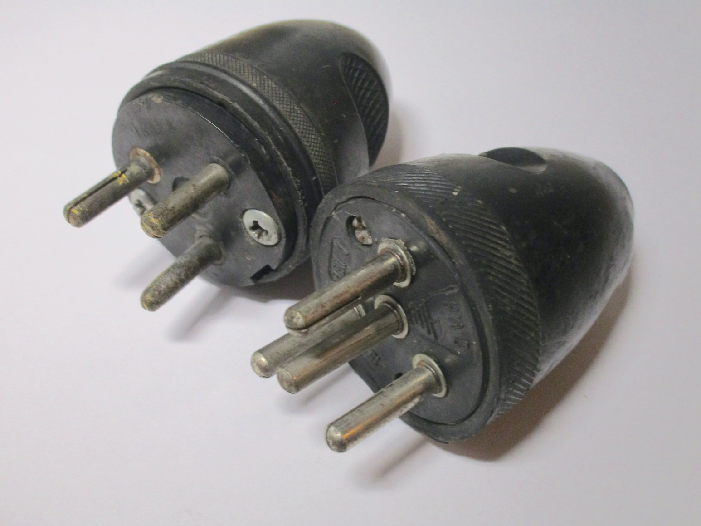
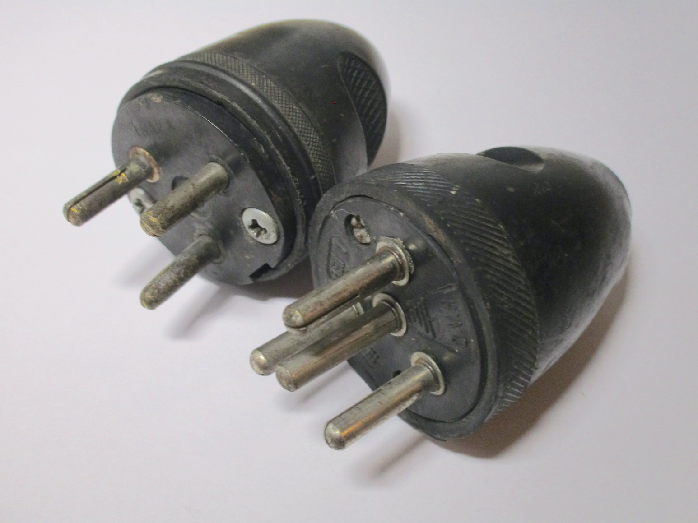
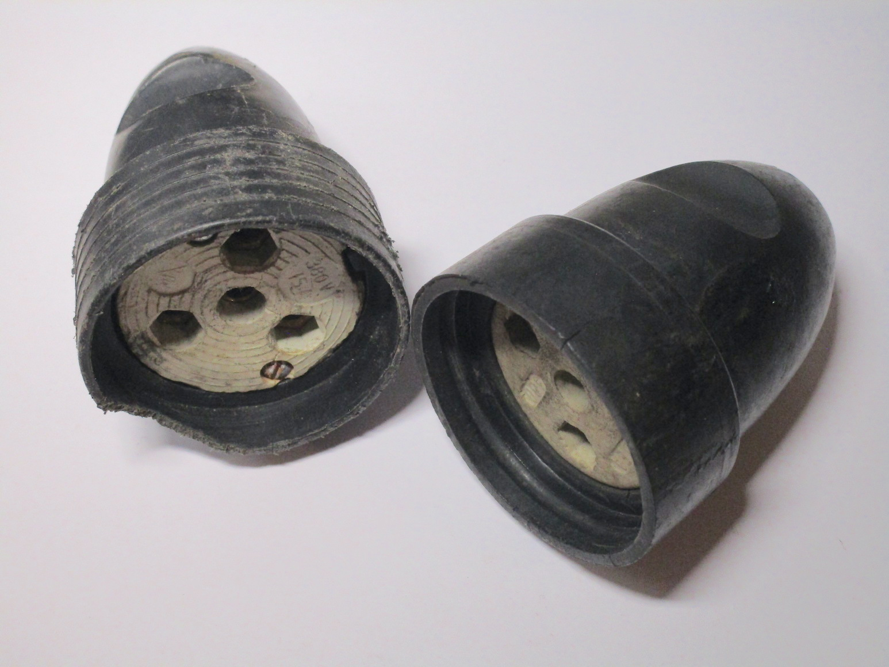
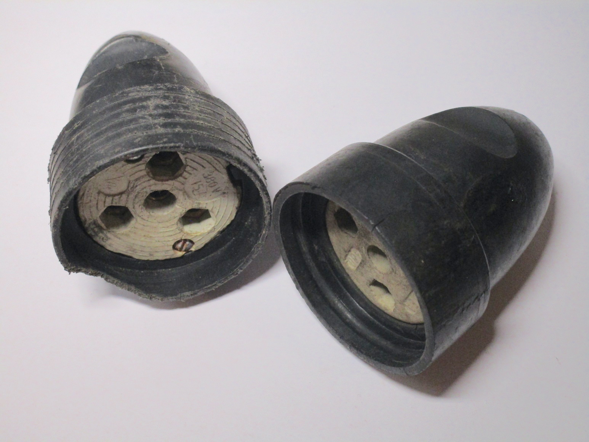
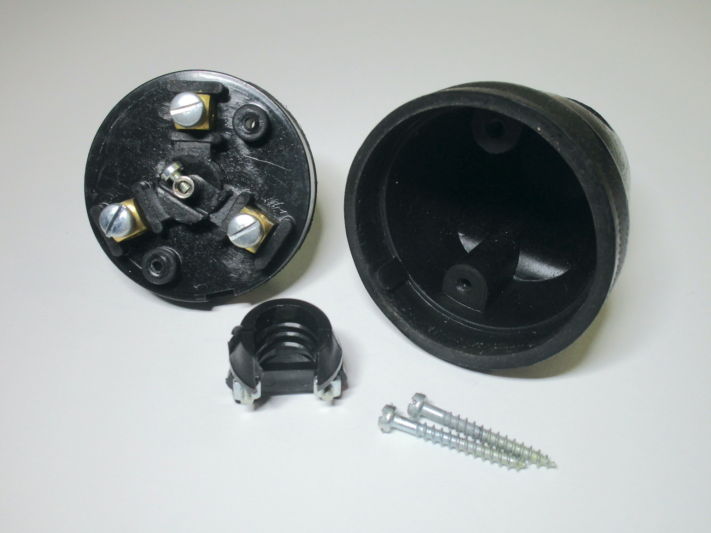
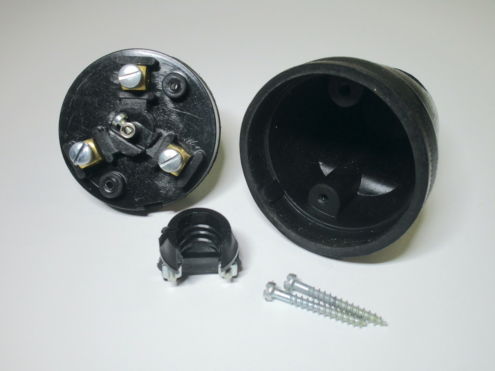

Vintage Italian plugs and sockets
This page documents vintage rewireable plugs and sockets from Italy, as used on appliances and extension cords.
Standard plugs and sockets
Round bakelite plug
Rating: unknown
This old plug was originally connected to a 1950s tube radio (it has since been replaced with something newer and safer) - it was likely the plug that originally came with it.
Its shape is quite different from modern Italian plugs: the body is entirely round (with the same dimensions as the old round unearthed plugs used in the rest of Europe) and made of two pieces of white bakelite. The cord entry is, unusually, on the side. While I'm not sure if this was the reason for it or not, this has the safety benefit of making people not pull on the cable to unplug the device, which avoids the wires possibly coming loose.


Old bakelite plug
Rating: 6A 250V
This was also connected to an old tube radio. It was probably made in the 50s. This plug is made out of two idential pieces of brown bakelite, and it is then held closed with a screw and a nut. This was likely a cost-cutting measure so they only had to make one mould instead of two.


Round 16A plug with longer earth pin
Rating: 16A 250V
This old 16A plug was found on an old extension cord. It's made of a flexible rubbery material, and has a quite unusual bell-like shape which means it takes up a considerable amount of space. This is quite similar to designs used with three-phase plugs and sockets, but somewhat unusual on a single-phase plug.
Its other interesting feature, arguably even weirder, is the presence of a longer earth pin. This is a feature commonly found on some types of plug from other countries, the idea being that this way the earth connection will always be made first; however, it's very unusual to see on an Italian plug at all (though some sockets of the time had a raised earth connection to essentially do the same thing).


Round type-L socket
Rating: 15A 380V
This is a "big" type-L socket, with dimensions similar to the round plug previously mentioned. It has a small indentation on the outside, presumably to help reduce the risk of accidental contacts (this wouldn't help completely, and especially with smaller plugs, but it's better than nothing), a feature some sockets at the time had, before shuttered sockets became common.
The rating of 380V is interesting - generally at the time these sockets would have been used at 220V, which could have either come from two phases from a 127/220V transformer, or a phase and neutral from a 220/380V transformer, but the 380V rating implies that this could have been used with two phases from the a 220/380V transformer, something I'm not sure was ever all that popular (I presume a three phase plug would have been more suitable instead, especially to prevent connecting the wrong type of device to the socket).


Rewireable plugs and sockets by BTicino
Rating: 15A, 15A, 10A 250V
These rewireable plugs were made by the Italian company BTicino and are definitely interesting for their lack of safety features compared to more modern plugs (although that's not surprising given their age).
The first plug is a 2-pin (so, with no earth connection) 16A plug, with no safety sleeving - this makes it extremely
easy for someone to accidentally touch the live pins while the plug is half-way into a socket.
The two sockets (one is a 16A and the other is a 10A), on the other hand, lack protective shutters, which means that
you can easily place a metal object in the live pins and that you can also do dangerous things like connecting the earth
pin of an appliance into the live pins of the socket.
Additionally, the contacts inside of them are almost right on the surface of the socket, which means that the pins of a plug become live as soon as you've started to insert it into the socket - and if you use one of the plugs without safety sleeving then you can leave the majority of the surface of the pins live for you to touch. Definitely not great!


White sockets with indentation
Rating: 10A 250V
These are two similar-looking connector sockets; both are rated at 10A, though while the first one is of the
"small" type of Italian socket, the other one is a "large" one, where such a rating is fairly unusual to see.
There's nothing particularly special about these sockets; they're made of some kind of flexible material and
both have an indentation around the front - likely to make it more difficult to accidentally come in contact
with a live pin from a plug, since this was before sleeved pins had become common.
Such a feature is seen nowadays on sockets meant for Europlugs, as all of them have to have the same size, but on Italian sockets this can be quite problematic as not all types of plugs may fit - for example, the round plugs shown above, but also modern rewireable plugs that have a side-entry for the cord.
The "big" socket has, unusually, square holes instead of round ones for the plug contacts, though obviously this doesn't make a difference. Both sockets seem to make a very poor connection with modern-day plugs: this was made in the era where plugs used split pins, so the plug itself was what pushed against the socket, while the socket's contacts were little more than circular tubes - comparatively, modern sockets are designed to have contacts which push against the pins of the plug to ensure a good connection, while plugs have solid pins.


Unusual types of plugs and sockets
BTicino Magic rewireable plug and socket
Rating: 10A 250V
See also: Standards
This is probably the weirdest type of plug I have ever seen.
It was designed entirely around safety: the socket had a complex shutter mechanism that meant that nothing but
the right plug could open it. The plug was polarised and didn't make contact with the socket until it was well
within the socket itelf.
Because of this any accidental contacts with live parts were essentially impossible.
And all of this in the 60s, at a time where the normal Italian plug were considerably less safe than they are
nowadays.
So why did they fail?
Well, it turns out that making an entirely new standard of plugs and convincing everyone to switch over from
the previous one is harder than you might imagine.
As far as I'm aware there weren't any appliances that came with Magic plugs already on them, so the users had
to buy new ones to fit their devices.
But that wasn't the only reason: although these plugs were incredibly safe for the time, the standard Italian
plugs and sockets also adopted some safety features, some (like the shutters) inspired by features found in the
Magic plug standard.
Additionally, their additional safety meant that installing Magic sockets in your house was considerably more
expensive than using standard ones.
Therefore these outlets were generally only seen in specialised environments or in higher end electrical
installations.
Thankfully if you found yourself in a house with Magic sockets, they sold adaptors to convert them to a standard Italian socket! Which... defeated the entire point of having them in the first place.


BTicino Magic 16A rewireable socket
Rating: 16A 250V
This is a rewireable Magic socket, something you could have used when building an extension cord, for example.
This seems to be a fairly uncommon item, which makes sense since not a lot of people could have made use
of these.
Interestingly enough, this socket only accepts 16A plugs, it does not accept the 10A plug shown previously.
From my understanding, later 16A sockets did accept 10A plugs, but this must be an earlier model where
that was not the case.


Once you open it up it is revealed that, in fact, this is just a standard 16A Magic socket module inside a plastic enclosure. I guess this probably made sense from a manufacturing perspective, but it is still funny to see.


Three-phase plugs and sockets
3-pin and 4-pin plugs and sockets
Rating: 15A 380V
Although in Italy three-phase power isn't commonly found in the home (unless you request it specifically), the
electrical distribution is of course three phase, and most businesses and factories do have all three phases
available.
So, it makes sense that there are plugs made specifically for connecting devices that need 3 phase power, and these
are what were used in Italy before the IEC 60309 connectors
used nowadays.
The first plug (and socket) only has 3 pins, for the 3 phases, but the second one also has a pin in the center for the
earth connection. Although the un-earthed socket might seem to have a hole for an earth pin, that is simply the hole
used to take the screw out, when disassembling the plug. However, it is still deep enough to let a 4-pin plug make
connection, at least partially.
Both types of plugs don't have a neutral connection: because of this, these plugs could have only been used with
balanced loads like motors.
 

{kind=link}
 

{kind=link}
30A 4-pin plug
Rating: 30A 380V
This plug is clearly just a larger version of the ones above, being rated for 30A instead of 15. The design is identical to the ones above, just at a larger scale, and additionally the central earth pin is noticeably larger than the live pins around it, a feature not present in the 15A version.
This particular example has never been used - apart from the distinct cleanliness of it, this can also be confirmed by the place on the body of the plug where the cord would have gone not having been perforated. It's certainly a fascinating way of installing a plug which I have never seen before.
 

{kind=link}
Adaptors and other things
Lamp socket adaptor
Rating: unknown
These devices were commonly used to connect appliances to a lamp socket, before sockets in houses were common. In Italy they were colloquially called rubacorrente (current stealer), as they were also used to run appliances from the (cheaper) lighting supply. Most of them, like this one, had two sockets (with no earth connection, of course) and one pass-through Edison lamp socket so you could still connect a lightbulb.


Early style of multiway adaptor
Rating: unknown
Adaptors with this type of design were very common, and very distinctive due to their shape. They feature three "small" type L sockets, with the earth hole present, with the plastic moulding shaped exactly around the shape of the holes on the sockets. This particular adaptor doesn't feeature an earth pin (and it wasn't cut off either, this adaptor was sold like this) - these were sold when almost all houses didn't have earthing, so it'd have likely also been used to bypass the earth pin on an appliance as well.


Old "16A" multiway adaptor
Rating: 10A 250V - but also only 1000W maximum
This is an old multiway adaptor, it has 1 16A type-L socket and 2 10A ones. The 16A socket doesn't support 10A plugs, and there are no shutters on the holes on any of the sockets, however the pins on it are sleeved for safety - it's interesting to see how some of the safety features present in modern plugs are present, but others are missing.


Magic to Bipasso adaptor
Rating: 10/16A 250V
If you bought into the BTicino Magic sockets you might have wanted to connect some appliances without rewiring
every one of them (something impossible to do with power bricks, for example).
Thankfully adaptors like this one existed, to let you connect normal Italian plugs to a Magic outlet - of course,
this defeated the safety benefits of the Magic system, which was likely the entire reason why they were installed
in the first place, althogh to be fair this seems to be a fairly safe adaptor, with shutters.
Notably, this adaptor works both in 10A and 16A Magic sockets - even the 16A-only socket I have. This makes sense, as it would have made this adaptor work with basically any Magic socket in a house.